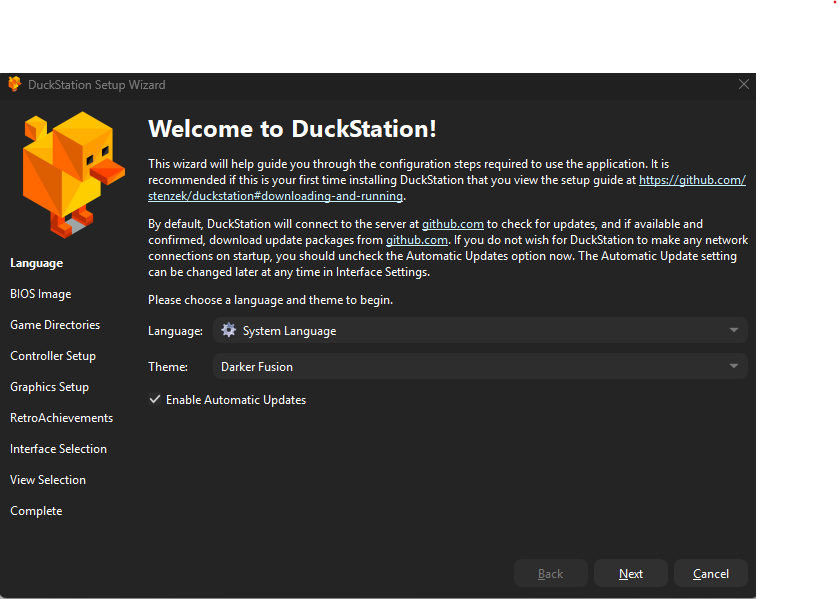
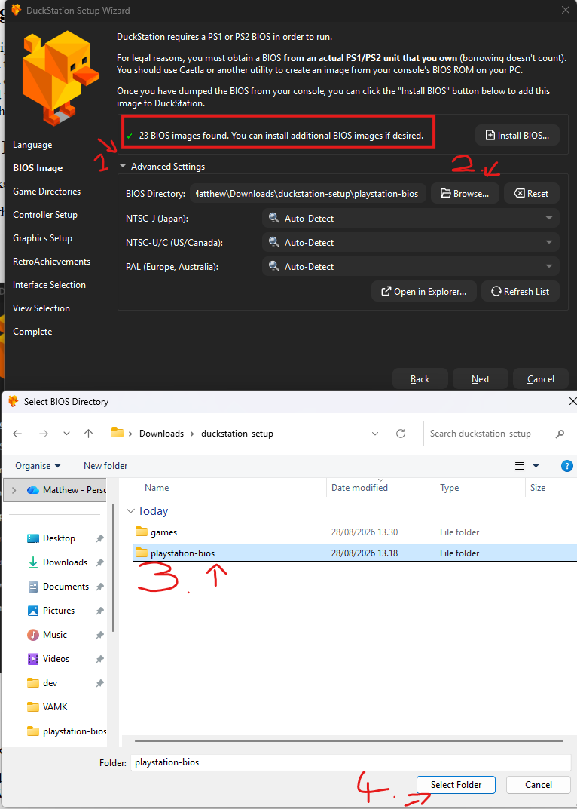
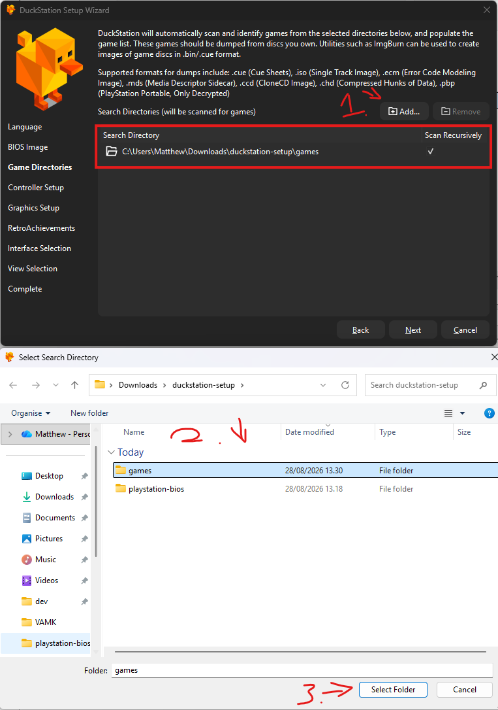
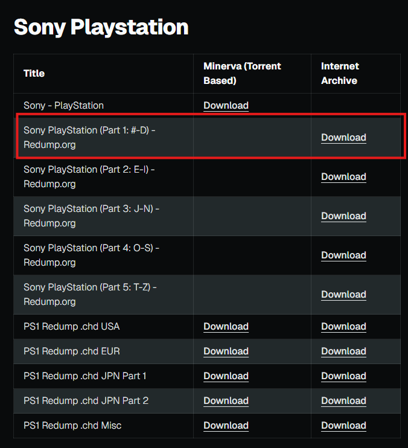
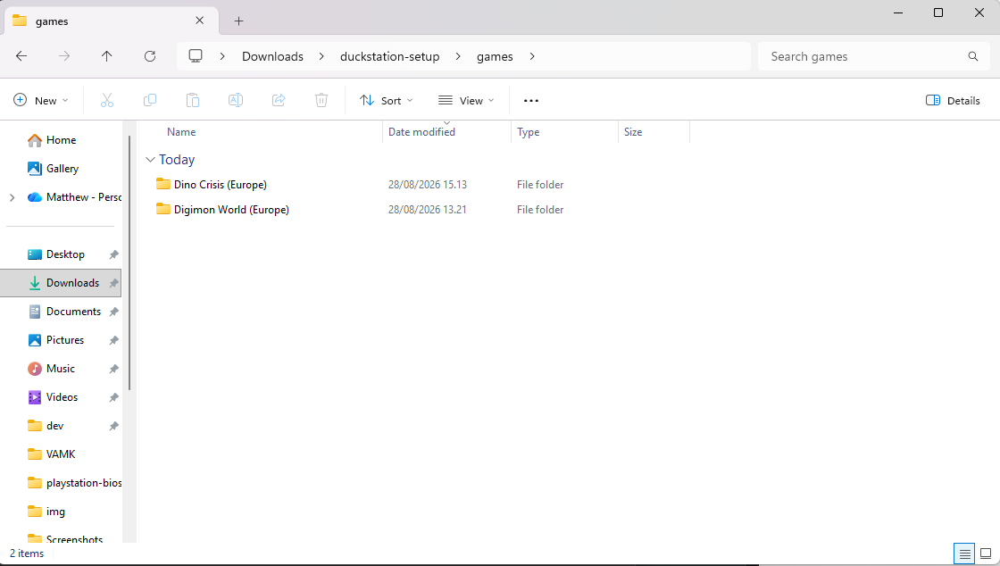
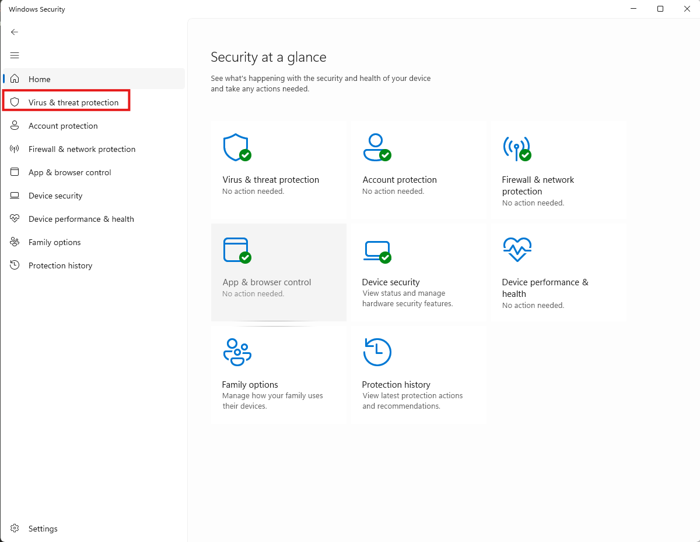
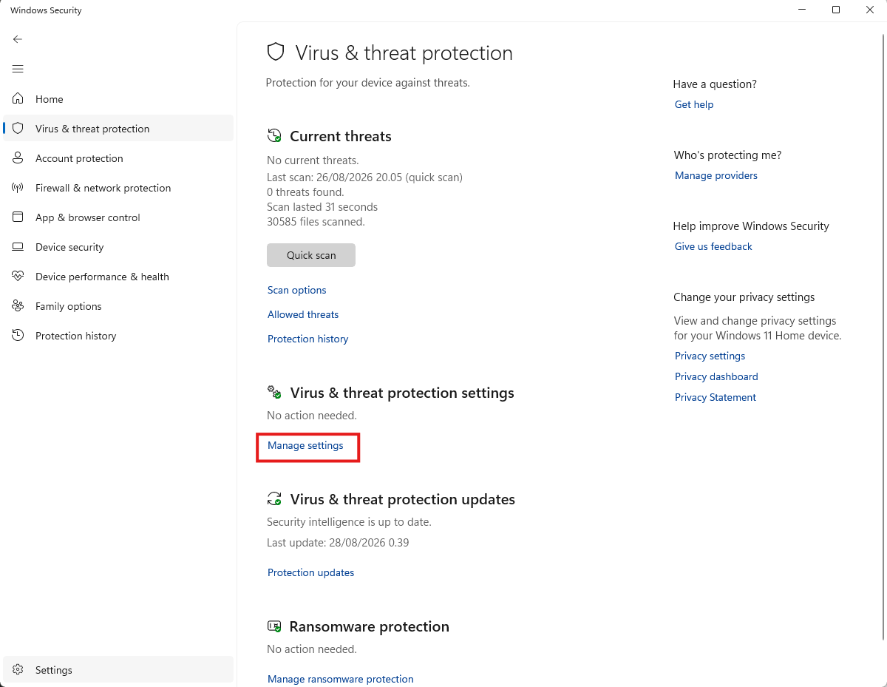
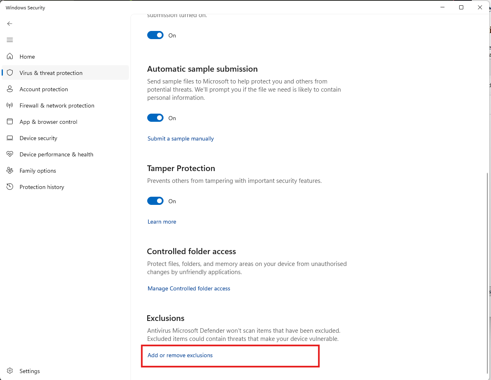

Here is a small tutorial for using Duckstation
A bit of background
I have no idea if you've emulated a console before, pretty much everything from the ps1
onwards requires more effort and setup and finding weird files than anything before it.
Firstly you need a BIOS file for the different versions of the console (JP, US, EU) which
should be legally obtained directly from the console, I have included all BIOS files in the
provided zip folder and will explain how to use them later.
Secondly you need a "dump" of the game disc which ofcourse should also be legally obtained
from a disc, or downloaded from an online repository. I have included Digimon World as well as
links and instructions for downloading more for yourself later. This will also be explained in
greater detail later.
Once you know how to download and install the games onto the emulator it's very easy to use,
it includes controller support, memory cards, save states, and lots of useful more modern
features which I haven't fully looked at.
What's included
In the zip folder I have provided is the installer for VC++ runtime (needed for duckstation),
the installer for duckstation, all of the necessary bios files, and Digimon World (Europe
edition) in a folder called "games"
Getting started
- Unzip the zip file
- Run the file VC_redist.x64.exe - This is a prerequisite install for duckstation, the default options
should be fine
- Run duckstation-windows-x64-installer.exe to install Duckstation
- Add whichever shortcuts you would like, and open it when it's installed
- At this point you may have to make an exception in your windows security for the program to run properly,
details in the issues section
Initial Duckstation Setup
With Duckstation now running weäre greeted with an installation wizard and I'll walk through the steps here.
- On the first page you can select your language a theme, feel free to look through them, pick whatever you like

- Next it's asking us to install the BIOS files, these are in the provided folder titled playstation-bios.
On this screen select "Advanced Settings" > "Browse" and select the unzipped playstation-bios folder. If
done correctly, you should see "23 BIOS images found...". Click Next.

- This section is similar to the last but for the games. So instead of selecting the playstation-bios
folder, select the games folder. It should prompt you for if you want to "Scan Recursively". Select yes,
this way you can unzip games directly into the games folder and duckstation will automatically find them.

- I don't know if you have a controller that youi will use for this, or if you want to just use a keyboard. If
you're using a keyboard you can just hit Next. Otherwise if you will use a controller, connect it now. Wait for a
second, then select "Automatic Mapping" and select your controller from a the dropdown list. Typically Playstation
style controllers are "DInput" and XBox styles controller are "XInput". The controls can be fully remapped later.
- In "Graphics Setup" you can just hit next, I'm certain there are some people who are opinionated about this
stuff, but I assume the defaults are fine
- In the "RetroAchievements" section. Retro Achievements is a website that supports giving old games, modern style
achievements. If you care about this then feel free to setup an account and link it to duckstation. I assume it
will just work but I haven't tested it.
- In "Interface Selection" I stuck with "Desktop Mode"
- In "View Selection" I selected "Grid View" but this is personal preference and can be changed later
- Setup is now complete, you can now play Digimon World byu double clicking the game in duckstation
Controller Setup
In order to see what the keybindings are, or to change the controller you're using, follow these steps.
- On the main screen of Duckstation select "Settings"
- In this dropdown select "Controllers"
- On the left-hand side select "Controller Port 1 - Analog Contoller"
- Here are your current keybinds, if you want to use a controller, first connect a controller then on this screen
click "Automatic Mapping" and select your controller from the dropdown.
- Likewise if you want to switch to Keyboard controls, click "Automatic Mapping" and select "keyboard"
Finding new games and installing them to Duckstation
People have dumped almost every game for the playstation 1 online, all you need is account on the Internet Archive. Links to the game files for PS1 and pretty much every other game
console can be found here.
Simply look for the list which contains your game. e.g. "Sony PlayStation (Part 1: #-D) - Redump.org" if you were
looking for "Digimon World" and click "Download". This will take you to The Internet Archive. Find the game you want
in the list and click it to download. Once downloaded unzip this game and then place it into the games folder
next to Digimon
World


In Duckstation you can then click "Settings" > "Rescan all games".
Issues
When I tried to run duckstation for the first time, windows security prevented the application from working so I
had to make an exception.
- To do that, search "windows security" in the windows search bar, or open it through the windows settings
- In Windows Security select "Virus & threat protection"

- In "Virus & threat protection settings" select "Manage settings"

- At the bottom select "Add or remove exclusions"

- Finally select "Add an exclusion" > "File" and then find the .exe for duckstation which should be in the
location C:\Users\%YOURNAME%\AppData\Local\Programs\DuckStation where %YOURNAME% will be replaced by
your user name. E.g mine is C:\Users\Matthew\AppData\Local\Programs\DuckStation
Happy Playing!!
I think that's everything you need to know to get this up and running, I don't think I have forgotten anything but
feel free to message me if there's any issues and I can help :)